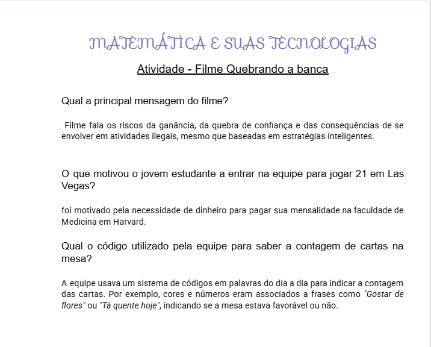
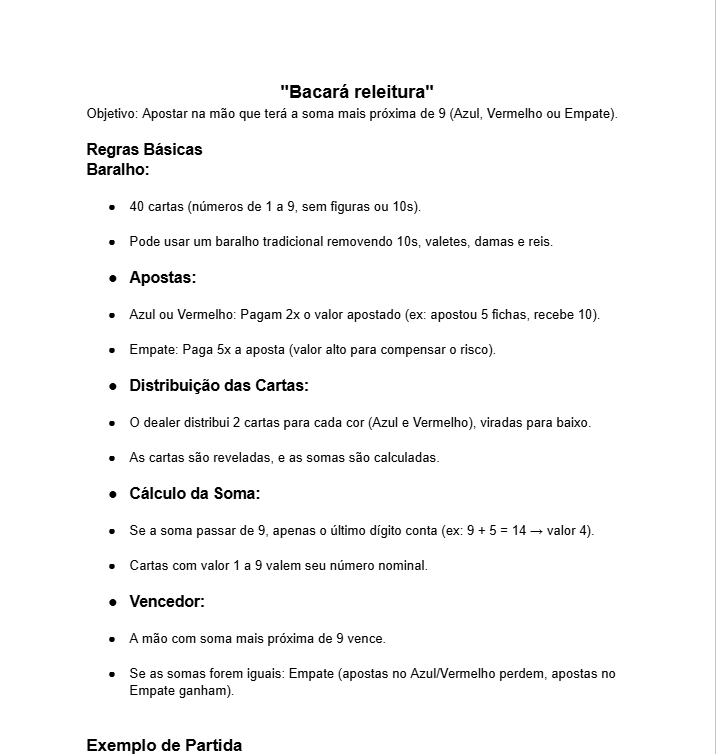

Atividade - Filme Quebrando a banca
- Assunto:
- probabilidade
- Objetivo da atividade:
- Mostrar como a matemática pode ser aplicada na vida real, usando o filme para aprender sobre probabilidade e estatística.
- Habilidades desenvolvidas:
- C5 - H31 e H32
- Link da atividade
- Acessar atividade

Atividade - criando a banca
- Assunto:
- Probabilidade e análise combinatória
- Objetivo da atividade:
- Desenvolver um jogo original ou atividades gamificadas utilizando os conceitos de análise combinatória e teoria das probabilidades, inspirado no filme Quebrando a Banca.
- Habilidades desenvolvidas:
- C5 - H30 - H31
- Link da atividade
- Acessar atividade

Atividade - criando a banca
- Assunto:
- Estatística
- Objetivo da atividade:
- Estatística básica aplicada à coleta e análise de dados do cotidiano dos alunos, utilizando ferramentas digitais como Google Forms e Google Planilhas.
- Habilidades desenvolvidas:
- C4 - H27 - H28 - H29
- Link da atividade
- Acessar atividade